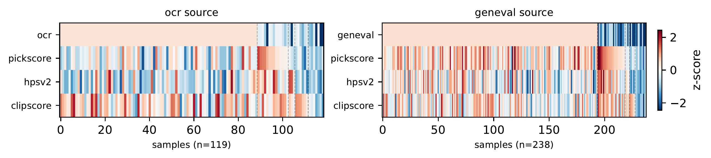
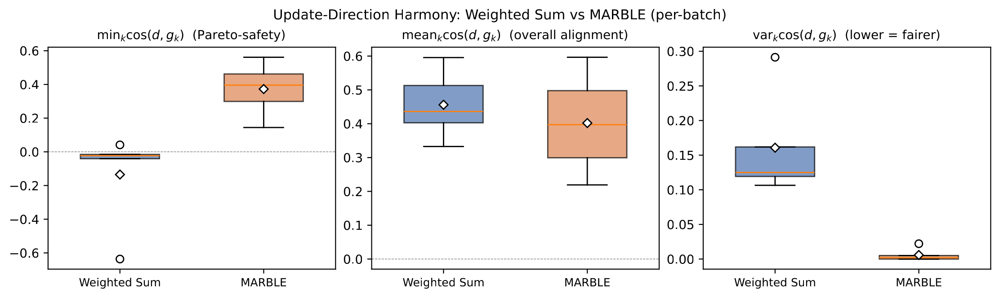
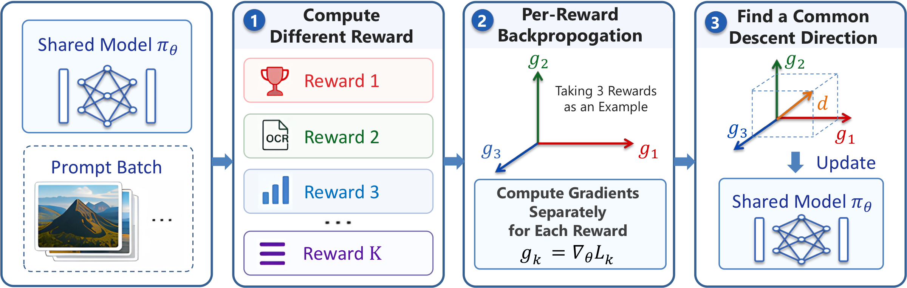
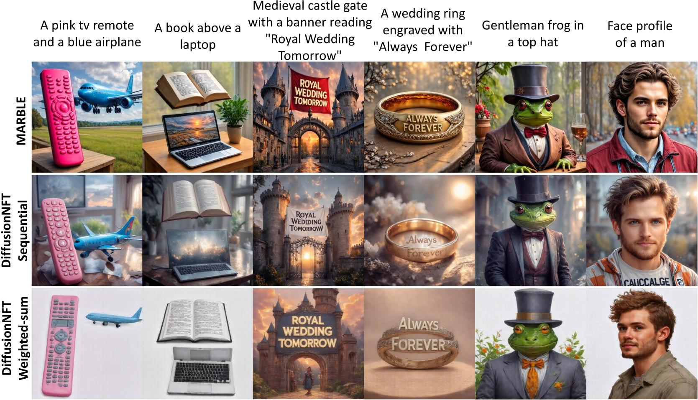
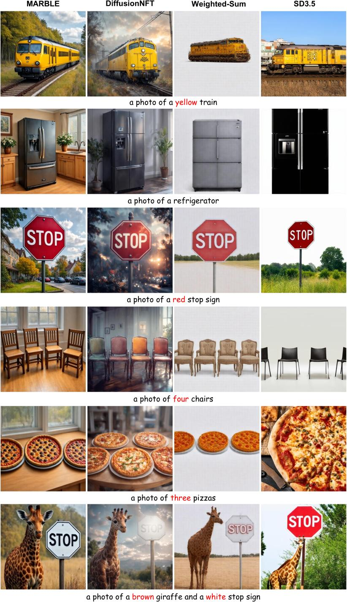
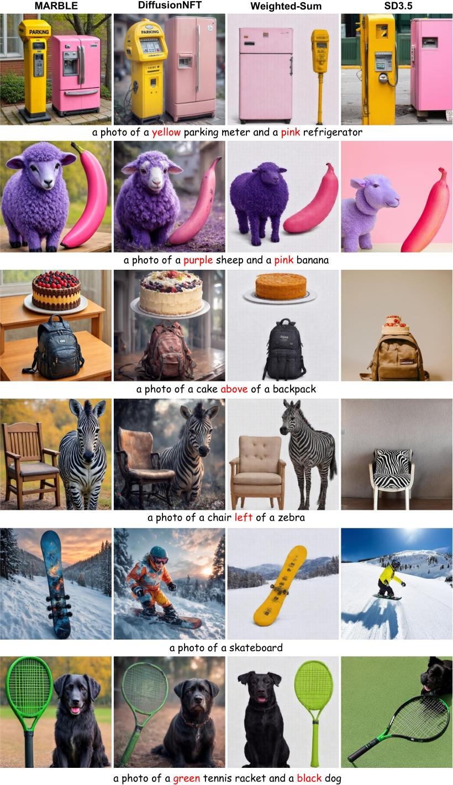
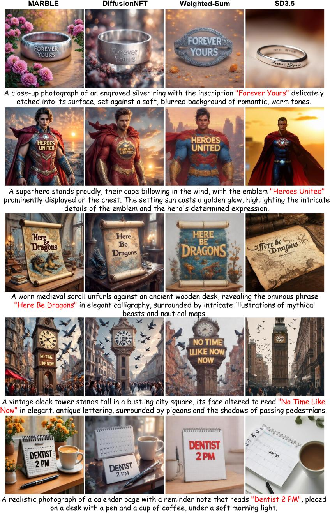
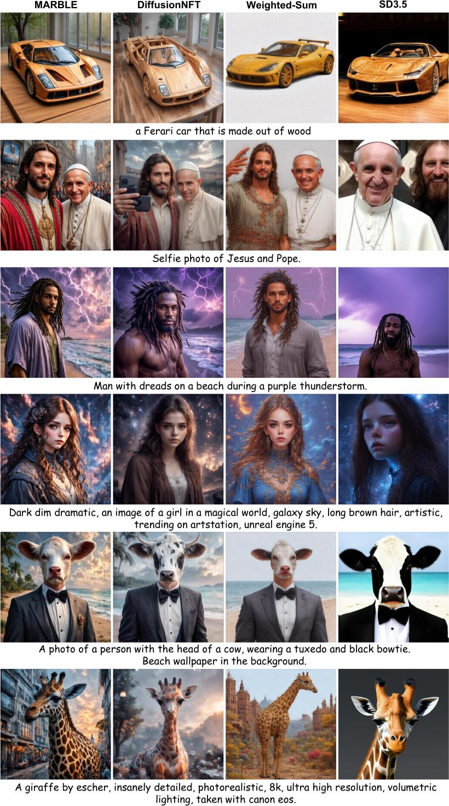
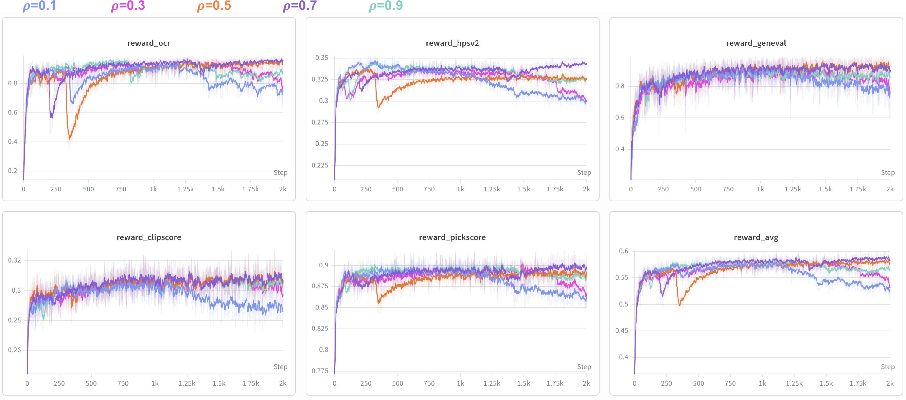

Reinforcement learning (RL) fine-tuning has become the dominant approach for aligning diffusion models with human preferences. However, image assessment is inherently multi-dimensional. Different evaluation criteria must be optimized jointly. Existing practice handles multiple rewards by training one specialist model per reward, optimizing a weighted-sum reward R(x) = Σk wk Rk(x), or sequentially fine-tuning with a hand-crafted stage schedule. These approaches either fail to produce a unified model that can be jointly trained on all rewards or necessitate heavy manually tuned sequential training. We identify weighted-sum reward aggregation as a key source of this failure. The underlying issue is a sample-level mismatch: most rollouts are specialist samples that are highly informative for certain reward dimensions while being inapplicable or uninformative for others, so weighted summation systematically dilutes their supervision. To preserve this signal, we propose MARBLE (Multi-Aspect Reward BaLancE), a gradient-space framework that maintains an independent advantage estimator for each reward, computes per-reward policy gradients, and harmonizes them into a single update direction without manual reward weighting. We further propose an amortized formulation that exploits the affine structure of the DiffusionNFT loss to reduce the per-step cost from K+1 backward passes to near single-reward baseline cost, together with EMA smoothing on the balancing coefficients to stabilize updates against transient single-batch fluctuations. On SD3.5 Medium with five rewards, MARBLE improves all five reward dimensions simultaneously, turns the worst-aligned reward's gradient cosine from negative under weighted summation in 80% of mini-batches to consistently positive, and runs at 0.97× the training speed of baseline training.
Three techniques that make multi-reward diffusion RL practical.
What MARBLE brings to multi-reward diffusion RL.
We identify that rollout samples are typically informative for only a subset of reward dimensions, making standard scalar reward aggregation intrinsically inefficient for multi-reward training.
MARBLE decomposes per-reward advantages, computes reward-specific gradients, and harmonizes them via MGDA with a normalize-and-rescale procedure that removes scale disparities while preserving natural gradient magnitude.
By exploiting the affine structure of the DiffusionNFT loss, we prove that the convex combination of K per-reward gradients equals a single backward pass with combined advantages, enabling cached MGDA weights with near-zero overhead.
On SD3.5 Medium with PickScore, HPSv2, CLIPScore, OCR, and GenEval, MARBLE improves all reward dimensions simultaneously — weighted-sum baselines consistently fail on specialist rewards.
Two failure modes of weighted-sum reward aggregation that motivate MARBLE's gradient-space design.
Most rollouts carry strong signal for only a subset of reward dimensions and are uninformative or inapplicable for the rest — an image of a cat carries no signal for OCR rewards, and a generation with strong text rendering may be only average aesthetically. Under R(x) = Σk wk Rk(x), the value of such a specialist sample is diluted by the unrelated dimensions, and the resulting advantage no longer reflects the dimension on which the sample is genuinely useful.

We empirically confirm the dilution at the gradient level: across multi-reward rollouts on SD3.5 Medium, the weighted-sum update direction is anti-aligned with at least one reward's gradient in 80% of mini-batches, meaning the shared update actively pushes against some reward most of the time. MARBLE's harmonized direction eliminates this conflict while keeping the average alignment essentially unchanged, and balances the rewards more evenly.

From per-reward scoring to harmonized gradient updates.

SD3.5 Medium fine-tuned with five rewards: PickScore, CLIPScore, HPSv2.1, OCR, and GenEval. Green rows are RL fine-tunes; gray cells are in-domain rewards used during training.
| Model | Rule-Based | Model-Based | Composite ↑ | ||||||
|---|---|---|---|---|---|---|---|---|---|
| GenEval | OCR | PickScore | CLIPScore | HPSv2.1 | Aesthetic | ImgRwd | UniRwd | ||
| SD-XL | 0.55 | 0.14 | 22.42 | 0.287 | 0.280 | 5.60 | 0.76 | 2.93 | −0.46 |
| SD3.5-L | 0.71 | 0.68 | 22.91 | 0.289 | 0.288 | 5.50 | 0.96 | 3.25 | +0.12 |
| FLUX.1-Dev | 0.66 | 0.59 | 22.84 | 0.295 | 0.274 | 5.71 | 0.96 | 3.27 | +0.10 |
| SD3.5-M (w/o CFG) | 0.24 | 0.12 | 20.51 | 0.237 | 0.204 | 5.13 | −0.58 | 2.02 | −2.32 |
| SD3.5-M + CFG | 0.63 | 0.59 | 22.34 | 0.285 | 0.279 | 5.36 | 0.85 | 3.03 | −0.26 |
| + FlowGRPO (GenEval) | 0.95 | 0.66 | 22.51 | 0.293 | 0.274 | 5.32 | 1.06 | 3.18 | +0.12 |
| + FlowGRPO (OCR) | 0.66 | 0.92 | 22.41 | 0.290 | 0.280 | 5.32 | 0.95 | 3.15 | +0.01 |
| + FlowGRPO (PickScore) | 0.54 | 0.68 | 23.50 | 0.280 | 0.316 | 5.90 | 1.29 | 3.37 | +0.36 |
| + DiffusionNFT (sequential)† | 0.94 | 0.91 | 23.80 | 0.293 | 0.331 | 6.01 | 1.49 | 3.49 | +1.02 |
| + DiffusionNFT (weighted-sum)‡ | 0.92 | 0.91 | 21.53 | 0.267 | 0.300 | 6.15 | 1.16 | 3.04 | +0.18 |
| + MARBLE (ours) | 0.94 | 0.96 | 22.83 | 0.286 | 0.355 | 6.59 | 1.53 | 3.52 | +1.12 |
Bold = best, underline = second best. Composite is the per-row mean of column-wise z-scores (each metric standardized to zero mean and unit variance across the rows of the table) and aggregates performance over all eight metrics; higher is better. Reading: MARBLE achieves the best score on OCR, HPSv2.1, Aesthetic, ImageReward, and UniReward — five out of eight metrics — in a single model, and the highest Composite score overall. The weighted-sum baseline collapses on PickScore and CLIPScore, while sequential training matches MARBLE only by training in stages with a hand-crafted curriculum. †Sequential multi-stage training. ‡Single-run weighted-sum aggregation.
Measured on 8×H200 with five rewards (K = 5). Speed and memory are normalized by the weighted-sum DiffusionNFT baseline. Amortization (N = 10) brings full per-reward harmonization from 0.56× back to 0.97× the baseline throughput, with only a 1.14× memory bump.
| Method | Relative speed ↑ | GPU memory |
|---|---|---|
| Weighted Sum (DiffusionNFT, K = 5) | 1.00× | 59 GB (1.00×) |
| MARBLE w/o amortization (K = 5) | 0.56× | 67 GB (1.14×) |
| MARBLE w/ amortization (K = 5, N = 10) | 0.97× | 67 GB (1.14×) |
Reading: per-reward gradient harmonization at every step costs $K{+}1$ backward passes, dropping throughput to $0.56\times$. Amortizing the full MGDA solve over $N{=}10$ steps reduces the average per-step cost to $(K{+}N)/N \approx 1.5\times$ backward passes — nearly recovering single-reward training speed at no quality cost (see Quantitative Results above and the EMA decay $\rho$ ablation below).
MARBLE produces images that satisfy multiple reward dimensions simultaneously, where weighted-sum baselines drop one or more aspects.

Side-by-side panels covering text rendering, attribute & spatial composition, and counting. Click any panel to enlarge.




Across all panels MARBLE produces sharper images with fewer blur and distortion artifacts than DiffusionNFT, and reliably satisfies text rendering, attribute binding, spatial layout, and counting requirements where weighted-sum baselines drop one or more aspects.
Between full MGDA solves, MARBLE EMA-smooths the cached harmonization coefficients with decay ρ. Smaller ρ tracks the latest gradient geometry but inherits batch noise; larger ρ smooths more but adapts slowly. ρ = 0.7 is the sweet spot across all reward dimensions.
| EMA decay ρ | Rule-Based | Model-Based | ||||||
|---|---|---|---|---|---|---|---|---|
| GenEval | OCR | PickScore | CLIPScore | HPSv2.1 | Aesthetic | ImgRwd | UniRwd | |
| ρ = 0.1 | 0.86 | 0.80 | 21.52 | 0.261 | 0.292 | 5.84 | 1.22 | 2.98 |
| ρ = 0.3 | 0.88 | 0.84 | 21.76 | 0.266 | 0.312 | 6.03 | 1.27 | 3.04 |
| ρ = 0.5 | 0.93 | 0.95 | 22.02 | 0.276 | 0.340 | 6.14 | 1.48 | 3.43 |
| ρ = 0.7 (default) | 0.94 | 0.96 | 22.83 | 0.286 | 0.355 | 6.59 | 1.53 | 3.52 |
| ρ = 0.9 | 0.90 | 0.89 | 22.14 | 0.272 | 0.342 | 6.26 | 1.47 | 3.40 |
Bold = best per column. Reading: ρ too small (0.1, 0.3) lets batch noise in; ρ too large (0.9) is overly inertial; ρ = 0.7 dominates all eight metrics simultaneously.

@article{zhao2026marblemultiaspectrewardbalance,
title={MARBLE: Multi-Aspect Reward Balance for Diffusion RL},
author={Canyu Zhao and Hao Chen and Yunze Tong and Yu Qiao and Jiacheng Li and Chunhua Shen},
year={2026},
eprint={2605.06507},
archivePrefix={arXiv},
primaryClass={cs.CV},
url={https://arxiv.org/abs/2605.06507},
}